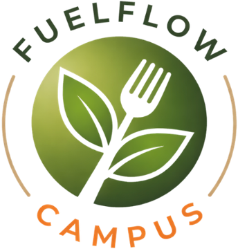

A Tuesday at UT Austin
Energy
of UT students surveyed were food insecure, about 3× the national average.
had never used the free campus food pantry.
Source: UT Student Government Food Insecurity Action Team survey of ~430 students, 2022 (The Daily Texan); USDA national average

FUELFLOWFuelFlow · A product pitch by Suhani Tiwari